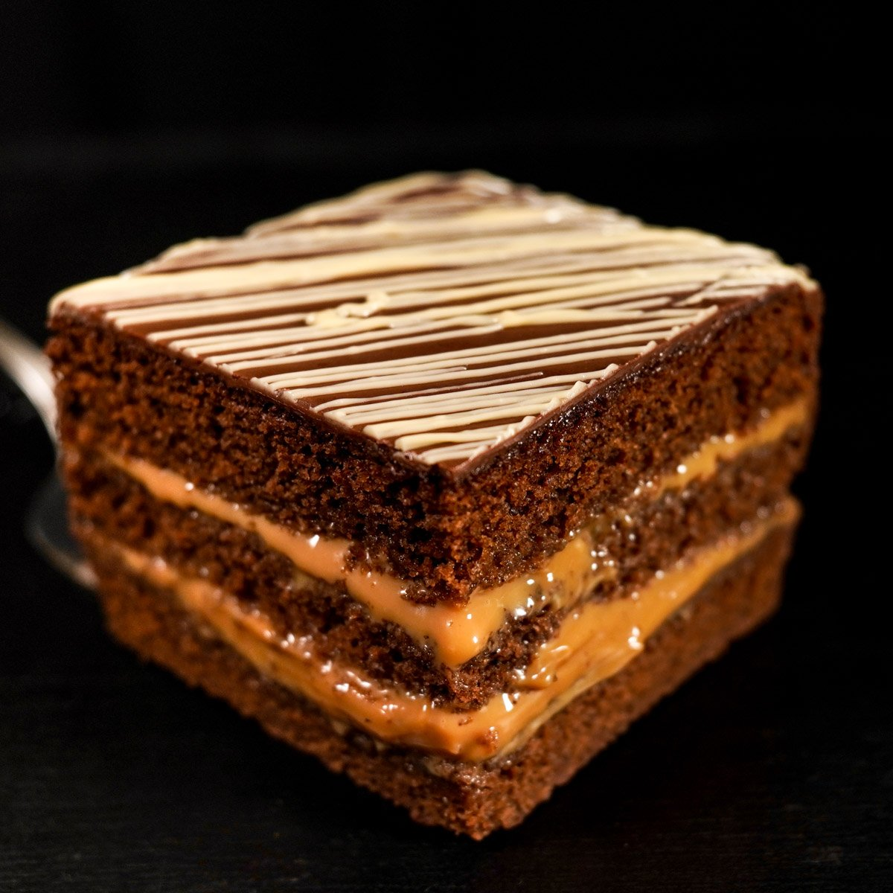

bolo de pão de mel

receita🎂
- \(1 \frac{1}{2}\) xícara (chá) de leite
- 3 a 4 cravos-da-índia
- \(\frac{1}{4}\) xícara (chá) de mel
- 1 xícara (chá) de açúcar mascavo
- 2 ovos
- \(\frac{1}{2}\) xícara (chá) de óleo
- \(1 \frac{1}{2}\) xícara (chá) de farinha de trigo
- \(\frac{1}{2}\) xícara (chá) de chocolate em pó
- 1 colher (chá) de canela em pó
- \(\frac{1}{4}\) de colher (chá) de noz-moscada ralada
- 1 colher (sopa) de fermento em pó
cobertura
- Doce de leite (para o recheio)
- 200g de chocolate ao leite ou meio amargo picado
- 100g de creme de leite